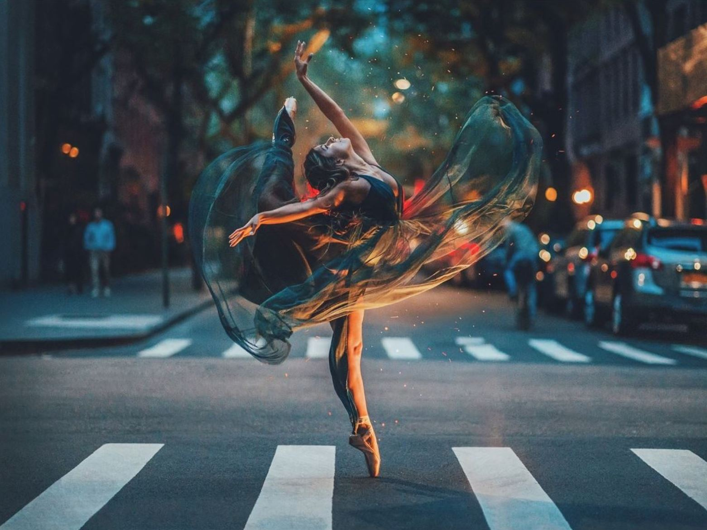

Brandon Woelfel
Brandon Woelfel is a freelance portrait photographer born and based in Long Island, NY. Brandon began his pursuit of photography as a college student studying computer graphics. Inspired by popular Instagram photographers, after graduating Brandon perfected his own signature style.
:O
"Bring color to my skies☀️"

"This night is cold in the kingdom"
"Wish we could turn back timeüåº""